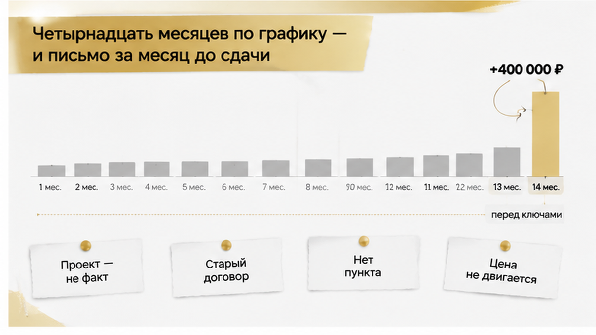
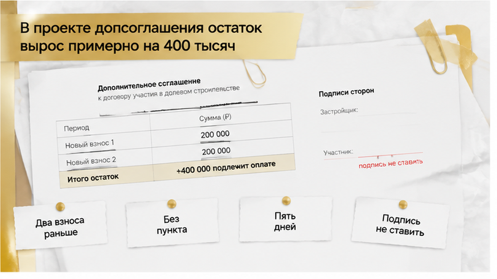

За месяц до сдачи дома тюменской семье пришло письмо, в котором остаток по рассрочке вырос примерно на 400 000 ₽. До этого они четырнадцать месяцев платили ровно по графику из зарегистрированного ДДУ и внесли около сорока процентов цены квартиры — ни одной просрочки, ни одного переноса. В приложенном файле лежала новая таблица платежей: сумма другая, два последних взноса сдвинуты на месяц раньше, ни ссылки на пункт договора, ни расчёта. Муж позвонил в отдел продаж, там ответили коротко: «так пересчитали», а если соглашение не подписать — договор расторгнут. Они не подписали и приехали ко мне с распечаткой на восемь страниц. Дальше решает одна вещь: есть ли в самом ДДУ пункт, который вообще разрешает менять цену, и что в этом пункте написано.
Меня зовут Святослав Шакин, я риэлтор в Тюмени, проект The Риэлтор. Расскажу изнутри, как такие письма разбираются до подписи, а не после. Пишите в Telegram или в MAX — посмотрю ваш ДДУ и график платежей.
Квартиру они брали в тюменской новостройке в рассрочку от застройщика: без ипотеки, без банка, без страховок. Схема для города обычная — первый взнос, потом равные платежи до ввода дома. Цена и график стояли прямо в договоре долевого участия, договор прошёл регистрацию, деньги уходили на эскроу-счёт: это счёт в банке, где деньги дольщика лежат до сдачи дома, и застройщик до этого момента к ним не подходит.
Дальше был год с лишним самой обычной жизни: каждый месяц платёж в дату из графика, жена вела табличку в телефоне — сумма, дата, номер квитанции. Оставалось внести остаток и забрать ключи, они уже ходили по мебельным и считали, во сколько выйдет натяжной потолок в спальне.
Письмо пришло вечером, на почту, без предупреждающего звонка. Тема — «Дополнительное соглашение к договору участия в долевом строительстве». Они открыли файл с телефона, потом полезли за ноутбуком, потому что с телефона в это не верилось. Итог в новой таблице не сходился с табличкой жены, а два последних взноса стояли на месяц раньше прежних дат. Про причину — ни слова, только вежливая просьба подписать и вернуть скан «в течение пяти рабочих дней».

Первое, что я сказал им на этой встрече: присланный документ — это предложение, а не свершившийся факт. Проект допсоглашения в договоре ещё ничего не изменил. Зарегистрированный ДДУ действует ровно в том виде, в каком его подписали, пока стороны не договорились об изменениях и не оформили их. Одним письмом на почту условия договора не заменяются — примерно об этом же была история, когда дольщикам прислали новый ДДУ вместо зарегистрированного. Там подсовывали новый договор, здесь — дополнение к действующему, суть одна: пока нет подписи, работает старый текст.
Второе: цена в ДДУ — не ориентир и не «примерная стоимость». Это существенное условие договора, в одностороннем порядке её не двигают. Ниже разберу, при каких условиях цену вообще можно поменять после регистрации: там связка из трёх элементов, и искать её надо в своём договоре глазами, а не на слух от менеджера.
Третье удивляет людей больше всего: близость сдачи дома сама по себе не делает новое соглашение обязательным. Ключи рядом, ремонт уже придуман, хочется подписать что угодно и не портить отношения — юридически застройщику это не добавляет ничего.
Поэтому в проекте я смотрю не на итоговую цифру, а на два вопроса. Меняется именно цена — или только порядок погашения остатка, то есть те же деньги перетасовали по датам? И есть ли ссылка на конкретный пункт ДДУ вместе с расчётом? У этой семьи не было ни того, ни другого: новая таблица, место для подписи, печать — и всё. Фраза «так посчитали» договорным основанием не становится, сколько бы раз её ни повторили по телефону.

Отказ у них звучал вежливо. Не «мы против», а «покажите пункт договора и расчёт — сверим и вернёмся». Ответ пришёл быстрее, чем расчёт. Сначала по телефону, потом в переписке: если соглашение не подписано, застройщик будет рассматривать вопрос о расторжении договора. Ни ссылки на пункт, ни цифр просрочки, ни срока — просто фраза, от которой холодеют руки, потому что за спиной четырнадцать месяцев платежей и почти половина стоимости квартиры.
Здесь нужно разделить две вещи: что сказано и что имеет силу.
Право застройщика в одностороннем порядке отказаться от договора при рассрочке закон привязывает к неуплате — а не к тому, что покупатель не согласился менять договор. В статье 9 214-ФЗ основания названы прямо: систематическое нарушение сроков, то есть больше трёх раз в течение двенадцати месяцев, либо просрочка одного платежа больше двух месяцев. Отказ подписать новый график в этот перечень не попадает никак.
Поэтому первый вопрос простой: по какому графику вообще считают просрочку. Если по исходному, зарегистрированному, а платежи внесены в даты — просрочки нет, и разговор о расторжении висит в воздухе. Если нарушением называют неуплату суммы из проекта допсоглашения, который никто не подписывал, это не долг по договору, а требование по бумаге без силы. Разница кажется формальной. Решает она всё.
Дальше — процедура. Односторонний отказ по 214-ФЗ не наступает от фразы в мессенджере и от повышенного тона в комнате переговоров. Обычно ему предшествует письменное предупреждение: что именно нарушено и в какой срок нужно погасить. Сам отказ оформляют отдельным уведомлением и направляют так, чтобы потом можно было подтвердить отправку. Пока таких документов нет — есть время разбираться спокойно. А если они пришли — игнорировать нельзя: садиться и сверять каждую строчку с исходным графиком и своими квитанциями.
И переписку не удаляйте. Ни «чтобы не нервничать», ни по просьбе менеджера «давайте лучше голосом». Когда угроза расторжения прозвучала в ответ на отказ и без единой ссылки на нарушение, эта связка сама становится фактом — она видна в датах и формулировках. В спорных случаях всплывает и статья 10 ГК РФ про злоупотребление правом, но оценивают её по конкретным письмам, а не по эмоциям. Похожая логика была в истории, где ключи от новостройки перенесли на год, а деньги на эскроу остались замороженными: пока переписка цела и хронология восстанавливается, у дольщика есть с чем идти дальше.
Теперь то, ради чего стоит открыть свой договор ещё раз — не пересказ менеджера, а сам файл. Оплата частями законом не запрещена: цена может вноситься по графику. Но сроки и порядок платежей должны стоять в договоре. Если там твёрдая сумма и расписанные даты, приближение сдачи корпуса само по себе не создаёт основания заменить их другой суммой и сжатыми сроками. Это главное, что стоит унести из истории: близость ключей не делает новое соглашение обязательным. Проект допсоглашения — предложение, а не состоявшееся изменение.
Картина меняется в одном случае: если в ДДУ действительно есть пункт про индексацию или перерасчёт. Тогда спор становится другим — не «имеет ли право передумать», а «наступил ли случай из договора и верен ли расчёт». Проверять по шагам. Какое условие допускает изменение. Какое событие должно было наступить. Относится ли оно к вашей ситуации. Есть ли формула — и совпадает ли присланная сумма с тем, что по ней выходит. Сплошь и рядом оказывается: пункт про перерасчёт есть, а событие из него к семье не относится вовсе.
Отсюда различие, которое путают чаще всего. Одно дело — перерасчёт по формуле из договора: разбираемся с основанием и арифметикой, разговор предметный. Другое — предложение подписать новую цену и новый график, потому что у застройщика поменялись коммерческие расклады. Здесь покупатель вправе не соглашаться, пока не увидит обоснованный расчёт. Это не каприз, а нормальная позиция стороны договора.
Изменение существенных условий оформляют допсоглашением, а в предусмотренных случаях его ещё и регистрируют — статья 8 214-ФЗ. Пока это не сделано, в реестре по-прежнему тот текст, который стороны подписали изначально: файл из письма ничего там не поменял. Поэтому я всегда прошу поднять зарегистрированный экземпляр и читать его целиком. Одна строка в документах способна развернуть всю сделку — как в истории, где ипотеку одобрили, а регистрацию отменили из-за строки в ЕГРН. Только здесь строка работает в обратную сторону: она защищает покупателя.
И коротко про рынок, чтобы не путать маркетинг с законом. Рассрочка от застройщика в Тюмени — обычная программа: где-то первый взнос от 15% и равные платежи до ввода, где-то беспроцентная рассрочка до года, где-то 20% и остаток к вводу объекта. Это условия продаж, а не норма, из которой следует доплата в 400 тысяч перед сдачей. Летом 2026 года обсуждали проект поправок в 214-ФЗ — про рассрочку остатка после ввода и графики в договоре; обсуждение завершилось в конце августа, но это фон, а не действующее правило. Ваш дом передают по действующему закону и по тексту вашего договора.
Первое, что я сказал им на кухне: ваши деньги лежат не у застройщика. При покупке по ДДУ платежи уходят на эскроу — счёт в банке, где сумма ждёт сдачи дома и застройщик до раскрытия счёта ею не распоряжается. Правила прописаны в статьях 15.4–15.5 закона 214-ФЗ и не зависят от того, спорите вы сейчас с отделом продаж или нет.
Отсюда вывод, который в горячем разговоре теряется первым: спор о проекте допсоглашения не превращает уже внесённые платежи в долг. Четырнадцать месяцев деньги уходили по графику из зарегистрированного договора. Эти суммы зачтены в цену по ДДУ, а не «подвешены» до момента, пока кто-то поставит подпись на новом файле.
Чтобы не путаться, я всегда прошу развести на бумаге четыре суммы: сколько внесено по факту — по квитанциям и выпискам; какой остаток выходит по зарегистрированному ДДУ и исходному графику; какая цифра стоит в проекте допсоглашения; есть ли реальная просрочка по старому графику — а не «просрочка» из-за отказа подписать новый. Когда столбик выписан, разговор перестаёт быть про «вы нам должны» и становится про конкретное расхождение в рублях.
О чём спрашивают чаще всего: «а деньги-то вернут?» Обещать фиксированную сумму и срок нельзя: судьба средств на эскроу при расторжении зависит от того, кто расторгает договор и на каком основании, и от документов по сделке. Я уже разбирал случай, когда срок сдачи сдвинули на год, а деньги дольщиков остались на эскроу — там решал текст договора, а не тон переписки. Бывает и обратная картина: ипотеку одобрили, а эскроу так и не открыли — пока счёт не работает, движения денег нет вообще.
Чем закончилось у семьи: они не подписали. Отправили письменный запрос про пункт и расчёт, сложили квитанции в отдельную папку. Спор не закрыт до сих пор — застройщик пункт так и не показал, но и деньги с эскроу никуда не ушли, старый график продолжает действовать, ключи по-прежнему в графике сдачи. Разница с тем вечером на кухне одна: тогда за них решал файл из письма, теперь — зарегистрированный договор.
Если в ДДУ прописан график рассрочки, имеет ли застройщик право поднять остаток за месяц до ключей? Напишите в комментариях, как считаете вы: только по пункту договора — или «раз дом почти готов, значит можно»?
Дальше всё решает одно письмо. Не звонок и не голосовые менеджеру, а обращение застройщику с просьбой ответить письменно: укажите основание и покажите расчёт. Вот что имеет смысл спросить.
| Что просим показать | Что это даёт |
|---|---|
| Пункт ДДУ, допускающий изменение цены или остатка | Видно, есть ли механизм в договоре — или это просто желание изменить условия |
| Событие, при котором пункт срабатывает | Понятно, наступил ли предусмотренный случай именно у вас |
| Формулу и исходные данные для суммы около 400 000 ₽ | Цифру можно пересчитать самому и сверить с договором |
| Исходный и предлагаемый график рядом | Сразу видно: меняется цена, сроки — или и то и другое |
| Дату, с которой новая сумма считается обязательной | Отделяет предложение от «уже начисленной» задолженности |
| Основание угрозы расторжения и сведения о просрочке | Проверяем, была ли просрочка по действующему графику |
| Порядок регистрации допсоглашения и последствия отказа | Понятно, что вам предлагают подписать и что будет, если не подписывать |
Параллельно соберите папку и больше её не разбирайте: зарегистрированный ДДУ, исходный график, квитанции и выписки, подтверждение операций по эскроу, проект допсоглашения и переписку целиком. Ничего не удаляйте, даже если разговор был неприятным: именно эти сообщения потом показывают, чем обосновывали требование — и в какой день оно появилось.
Пришло письмо с новой суммой перед сдачей? Скиньте пункт договора и проект допсоглашения — посмотрю, есть ли там вообще основание. Telegram: @Tyumen_Rieltor, MAX: Святослав Шакин.
Главное, если вы сейчас в этой точке: не подписывать под нажимом, пока на столе нет письменного основания и проверяемого расчёта. Отказ подписать новый документ — не просрочка по старому, а близость ключей не делает предложенные условия обязательными, как бы мягко об этом ни просили «в течение пяти рабочих дней».
Рассрочка от застройщика в Тюмени — рабочий инструмент, и бросать новостройки из-за одного письма не нужно. Ручка управления у покупателя ровно до момента подписи: пока подписи нет, действует зарегистрированный договор, а деньги спокойно лежат на эскроу. У семьи из этой истории всё держится именно на этом — они успели проверить документ до автографа. Спокойный вечер на кухне с распечаткой стоит дешевле, чем 400 тысяч, согласованные в панике.